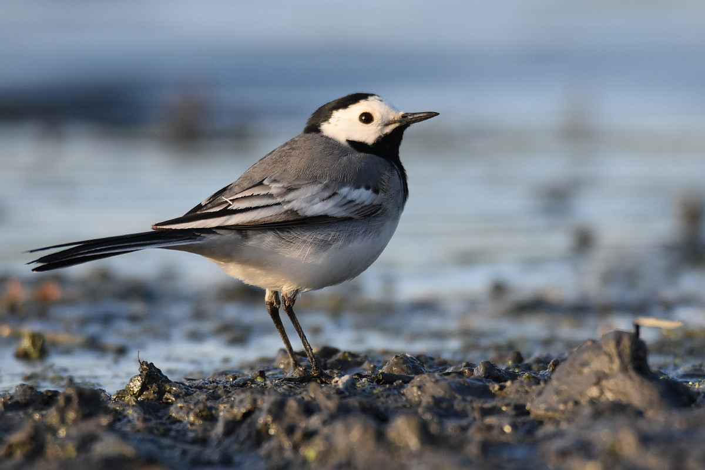

Птицы Антарктиды

Птицы Антарктиды
В Антарктиде обитает около 46 видов птиц, из которых 5 находятся под угрозой исчезновения, а один (императорский пингвин) является эндемиком. На материке гнездится 14 видов птиц, на окружающих его островах — 32 вида. Это морские птицы, водоплавающие птицы, ныряющие птицы. Питаются они морскими животными (в основном рыбой, головоногими и ракообразными). Роль хищников играют поморники. Образуют крупные скопления.